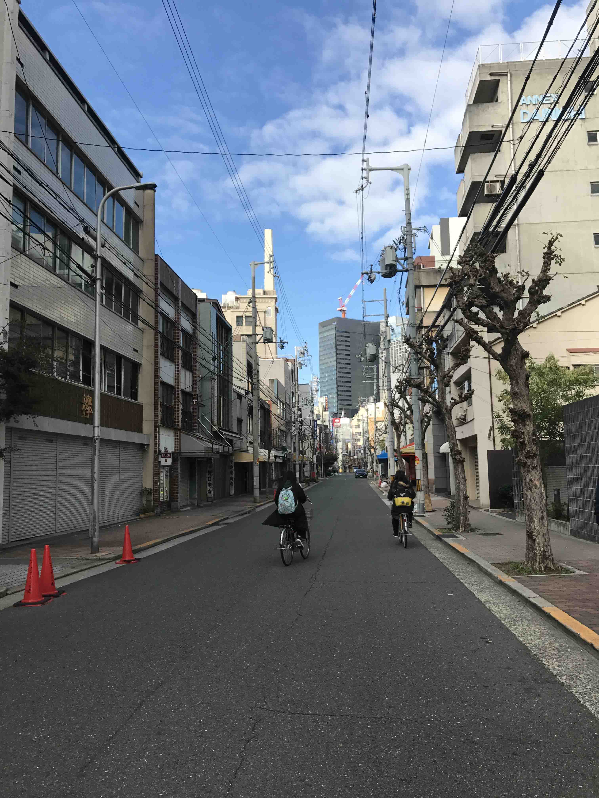
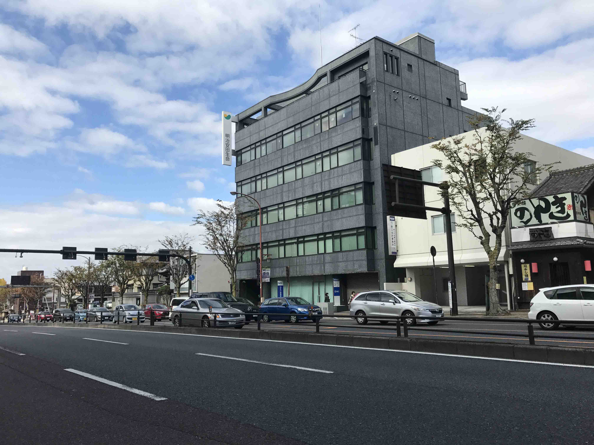
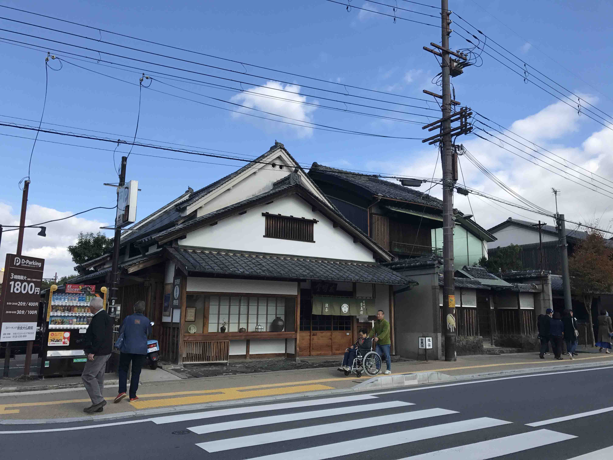
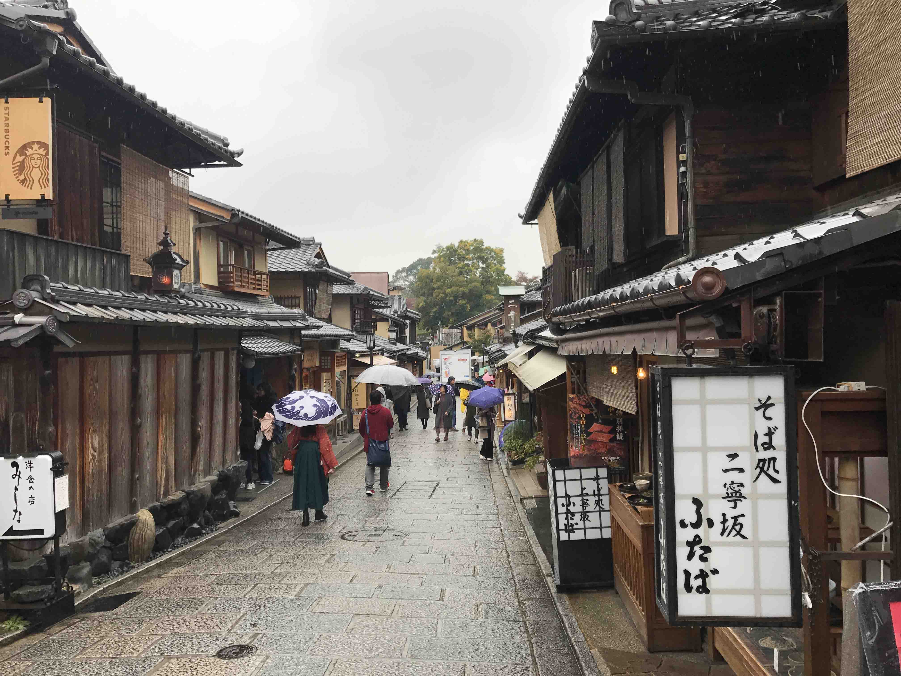

旅行的意义在于见识生活的更多可能性，不至于在生活中遇到些问题时以为这就是全世界，一叶障目! (摘自Bang的博客).
一直以来都想出国去看看，见识一下外面的世界。因为日本文化和中国文化渊源最相近，加上又是个超前发达的国家，去的意义会比较大，如果只是简单的想出去看看风景就没必要选择出国了，出国一定是抱有感受异国风土人情与文化的想法的。
11月11去的日本(这个日子好尴尬，纯属巧合，自己也是到了那天才知道自己计划的日子这么有深意),正好赶上日本红叶盛开的时候，时间选的是非常合适了。由于是第一次日本，看了网上很多攻略，最后选择了停留在关西这片区域，不希望每天走马观花，行走的太过匆忙。落地岛国的第一感觉还是和几乎每个来日本旅游的人同样的感受，那就是干净！干净的令人发指，它不是那种看不见垃圾的干净，而是看不到灰尘的干净，街道给人的感觉就是刚下过雨般清爽，空气是给人一种特别舒适和亲和，毫不夸张街道上任意一角都能成为我眼中的一景，两旁的房子也是仿佛新装修过的一样，车辆都像刚洗过了。干净的街道上虽然布满了老城市的象征-蜘蛛丝一样的电线杆，也毫无违和感，一点不影响美观，不会觉得攀爬的线缆扰人心烦。
然后说说自己亲身经历的两件事情，让我对这里的人素质的高度认可。 因为省钱从北京飞往大阪买的是中转票，飞东京然后转大阪，在东京羽田机场转机着陆时需要过海关过安检，然后需要从A航站楼到B航站楼转到大阪的航线，这其中过海关耽误太多时间，加上自己应对问题的不及时。导致我最后只剩下大约20多分钟，我还停留在A航站楼，一开始我是不知道需要去另一个航站楼乘下一航班，加上一定的语言障碍，我不得不在机场向路人求救，和一个日本妇女用着笨拙的英语沟通，我从她的眼神里感觉到了我的时间相当的紧张了，她也表现的非常替我焦急，边用吃力的英语边用手比划告诉我来错地方了，不应该在这个航站楼登机，她耐心看了我的登机牌，然后带我去了直梯，并帮我按了我要去的楼层，然后告诉我接下来再怎么走，我匆忙的道完谢，拎着行李就按照她说的去做。赶到了坐摆渡车的位置，真好车来了，匆忙上了车，一看手机，只剩15分钟了，当时我的内心真的是一片焦灼，隐约感觉自己根本无法赶上那趟航班了。车上没几个人，车辆行驶过程中，我找到对面一个和我差不多大的姑娘，递给她我的登机牌，并用手比划着说到I’m Chinese, Can you help me？能感觉她的英语也比较烂，我就打开Google translator给她翻译我的话然后给她看，她看懂了之后，低头看了看手表皱了皱眉并摇了摇头，告诉我时间很短了，可能不一定能赶上，她看着我一路上也是非常焦虑着急，快到下车时，她告诉我，她会下车后带着我一起去登机口。下了车，小姑娘就在前面领着我跑起来，她穿了双高跟鞋跑不了太快，能看出来她真的很替我着急，用力的再跑，我拖着行李一直追随着她，一直跑进航站楼，带着我冲进电梯，一路小跑并时不时两边张望找路标，一直把我送到了登机口，时间仓促，没来得及多停留向她表示感谢，匆忙的向她道了别冲进闸机口，而我看到她还不断的像我低头弯腰敬礼，当时我真的震惊了，我也只能同样的动作向他回礼并不断的重复着谢谢。一直目送着我进了站，远去之后她才离开。萍水相逢的陌路人，而且她也知道了我是中国人，对我这么的热情帮助，我真的是深刻的被感动了。我终于知道了这才是真正的文明社会。
第二件让我感动的事情也是刚下飞机那天晚上，下了飞机已经将近11点，去我的住宿地需要再做一个多小时的地铁，地铁里和我旁边一个初中女生交流，向她询问我坐的路线是否正确等问题，因为她不会英语，我俩一路都是用我的手机互相翻译，我打一段中文，她再耐心的用我手机打一段日语，这样沟通了一路聊得很开心，后来她比我早下车，下车之前，也是向我弯腰敬了个礼道别。下了地铁，然后还要倒一趟地铁，这里是需要重新购票的，然后一旁工作人员看到已经接近末班车点儿了，焦急的告诉我不用买票了，先进去，并替我打开了闸门，并嘱咐我抓紧时间，否则赶不上末班车了。就这样，我又一次幸运的赶上了最后的末班车，并且没有买票。从这一经历，我见识到了这个国家的人情味。
日本的服务行业是真的做的非常极致，作为一个消费者真的是能感受到十足的尊重和消费心情。无论是在任何场合，便利店买小商品，站台工作人员，还是餐厅就餐，服务员总是会热情的笑脸相对。我个人可能是比较在意这点，相比国内有些地方，去吃个饭可能就跟欠他钱一样板着脸。未来的任何行业的竞争，只要和服务行业沾点关系的，肯定是一种服务的竞争，目前国内移动互联网的兴起，这块已经有所进步了，但是发展空间还很大。
来日本旅游过的人都会被日本人的高素质震惊到，从生活的方方面面表现的淋漓精致。日本汽车的喇叭设计的鸣笛声特别小，而且鸣笛的时间也是控制的特别短，不会吵到行人和小区里。马路上的车辆和行人都是十分的井然有序，十字路口车辆会在离很远的地方自觉停下来，等候行人通过，车与车之前也是如此的礼貌。
还有一点就是日本的学生姑娘们冬天国真的是不穿秋裤的，我去的时候虽然不是冬天，但是也是已经很冷了，日本的女生校服就是标准的上身西装，下身短裙丝袜，一双黑皮鞋。当时我都已经穿上秋裤了，她们还光着腿。然后有一次起的早，经过一个应该是初中学校，户外体育课上，男生女生都是穿着短裤在户外进行体育锻炼，有踢足球的，有练田径的，在国内的话最少最少应该也都是穿着长裤在锻炼吧，从这点也能看出两个国家从小对孩子的体能素质和体育的重视程度的差距。
日本一大早的街道，学生骑着单车上学的一幕。
日本的街道
人与自然的和谐
晒几张秋天的风景照
